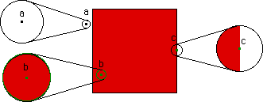

| The boundary of a set S in the plane is all the points with this property: every circle centered at the point encloses points in S and also points not in S. |
| For example, suppose S is the filled-in unit square, painted red on the right. The point a does not belong to the boundary of S because, as the magnification reveals, a sufficiently small circle centered at a contains no points of S. Similarly, b does not belong to the boundary of S because a small enough circle centered at b encloses only points of the S. The point c does belong to the boundary, because every circle centered at c contains points of S and also points not of S. |
| Boundary is an extension of the familiar notion of periphery. |
|  |
Return to the boundary of the Mandelbrot set.